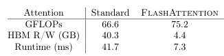

FlashAttention computes exact attention without building the full matrix
What slows attention on a GPU is memory traffic more than arithmetic, and Dao and colleagues cut that traffic about ninefold by computing the attention matrix in on-chip SRAM one block at a time and writing only its result back to memory.
FlashAttention: Fast and Memory-Efficient Exact Attention with IO-Awareness
Read the paperTransformers are slow and memory-hungry on long sequences, since the time and memory complexity of self-attention are quadratic in sequence length. Approximate attention methods have attempted to address this problem by trading off model quality to reduce the compute complexity, but often do not achieve wall-clock speedup. We argue that a missing principle is making attention algorithms IO-aware — accounting for reads and writes between levels of GPU memory. We propose FlashAttention, an IO-aware exact attention algorithm that uses tiling to reduce the number of memory reads/writes between GPU high bandwidth memory (HBM) and GPU on-chip SRAM. We analyze the IO complexity of FlashAttention, showing that it requires fewer HBM accesses than standard attention, and is optimal for a range of SRAM sizes. We also extend FlashAttention to block-sparse attention, yielding an approximate attention algorithm that is faster than any existing approximate attention method. FlashAttention trains Transformers faster than existing baselines: 15% end-to-end wall-clock speedup on BERT-large (seq. length 512) compared to the MLPerf 1.1 training speed record, 3× speedup on GPT-2 (seq. length 1K), and 2.4× speedup on long-range arena (seq. length 1K-4K). FlashAttention and block-sparse FlashAttention enable longer context in Transformers, yielding higher quality models (0.7 better perplexity on GPT-2 and 6.4 points of lift on long-document classification) and entirely new capabilities: the first Transformers to achieve better-than-chance performance on the Path-X challenge (seq. length 16K, 61.4% accuracy) and Path-256 (seq. length 64K, 63.1% accuracy).1
Where attention spends its time
A modern GPU can multiply matrices far faster than it can move numbers in and out of its main memory. On an A100, the on-chip SRAM that sits beside the compute cores delivers about 19 terabytes per second, while the high-bandwidth memory (HBM) that holds the model runs at roughly 1.5 terabytes per second.1 SRAM is about thirteen times the bandwidth, but it is tiny: around 20 megabytes against HBM's 40 gigabytes. Any computation that keeps reaching back to HBM spends most of its time waiting for data, not computing.
Attention is one of those computations. For a sequence of length N with head dimension d, it forms an N \times N score matrix, normalizes it row by row, and uses it to average the values.
Written this way, the three steps look like arithmetic. On the hardware they are mostly memory movement. A standard implementation computes \mathbf{S} and writes all N^2 of its entries to HBM, reads them back to apply the softmax, writes \mathbf{P} back again, then reads it a third time to multiply by \mathbf{V}.1 The scoring and the value-averaging are matrix multiplies the cores finish quickly. The softmax, the masking, and the dropout in between are cheap in arithmetic but move the whole quadratic matrix twice. That is where the clock goes.
The matrix that never gets written
FlashAttention removes the round-trips by never materializing the score matrix in HBM at all. To materialize a matrix is to write its full contents to memory as an array a later step reads back. The insight is that the softmax over a row does not need the whole row present at once. A row can be consumed in pieces, as long as a small amount of running state travels alongside the output.
The algorithm tiles the inputs into blocks sized to fit in SRAM. An outer loop walks over blocks of the keys \mathbf{K} and values \mathbf{V}, loading each into SRAM. An inner loop walks over blocks of the queries \mathbf{Q}. For each pair of blocks, the corresponding tile of the score matrix is computed on-chip, turned into partial softmax weights, and multiplied into a running output accumulator, all without leaving SRAM. Only the final output \mathbf{O} is written back to HBM. The block sizes follow from the SRAM budget M: the key and value blocks are about M/4d rows, sized so the inputs, the score tile, and the output all fit at once.1
![Left: a triangle of the GPU memory hierarchy labeled SRAM 19 TB/s (20 MB) at the small fast top, GPU HBM 1.5 TB/s (40 GB) in the middle, and Main Memory CPU DRAM 12.8 GB/s (over 1 TB) at the wide slow base. Center: the tiling schematic, with an outer loop over blocks of K and V and an inner loop over blocks of Q, a compute block on SRAM, and only the output written to HBM, the N-by-N matrix drawn as a dotted box that is never stored. Right: a bar chart of attention runtime on GPT-2, the tall PyTorch bar split into Matmul, Dropout, Softmax, Mask, and Matmul segments beside a much shorter FlashAttention bar labeled Fused Kernel.](flash-attention/asset-1.png)
The runtime breakdown on the right of the figure shows what this buys. In the standard kernel, the two matrix multiplies are a minority of the time; the softmax, masking, and dropout that shuttle the matrix through HBM take the rest. FlashAttention fuses all of it into a single kernel and reports a 7.6× speedup on the attention computation for GPT-2.1
A softmax that never sees the whole row
The obstacle to consuming a row in pieces is the softmax itself. The softmax of a row divides each exponentiated score by the sum over the row, and for numerical safety it first subtracts the row's maximum. Both the maximum and the sum depend on entries a single block has not seen yet. The fix, from Milakov and Gimelshein's single-pass softmax, is to carry the two quantities as running state and correct them as new entries arrive.2
Each query block keeps a running maximum m_i and a running normalizer \ell_i. When a new key block yields a local maximum \tilde m_{ij} and local sum \tilde\ell_{ij}, the running state is updated to the wider maximum and the correspondingly rescaled sum.
The output accumulator is corrected the same way. The values summed so far were normalized against the old maximum and the old sum. Before the new block is added, the old accumulator is scaled back up and re-anchored to the new maximum. Then the whole thing is divided by the updated normalizer.
- \operatorname{diag}(\ell_i^{\text{new}})^{-1}Divide by the updated running normalizer, so the row's weights still sum to one.
- \operatorname{diag}(\ell_i)\,e^{\,m_i - m_i^{\text{new}}}\,\mathbf{O}_iThe output so far, un-normalized by its old sum and re-anchored to the new maximum.
- e^{\,\tilde m_{ij} - m_i^{\text{new}}}\,\tilde{\mathbf{P}}_{ij}\mathbf{V}_jThe new block's values, weighted by its scores at the same new maximum.
When the last key block has been folded in, the accumulator holds exactly what the full-row softmax defines. This is what separates FlashAttention from the approximate methods: it recovers the exact softmax attention, only computed in a different order. The result is the function standard attention defines, not an approximation of it. The recomputation trick that makes the memory-efficient version of this idea exact was set out by Rabe and Staats, who showed attention needs only O(1) memory in sequence length while staying exact.3
Counting memory, not arithmetic
The speedup has a clean account in the number of HBM accesses. Standard attention reads and writes the quadratic matrix, so its memory traffic grows with N^2. FlashAttention's traffic grows with the square of the head dimension over the SRAM size instead.
The ratio between the two is about M/d^2. For a head dimension of 64 and an SRAM budget near 100 kilobytes, that is a many-fold reduction in memory traffic. The paper measures it directly on GPT-2 medium at sequence length 1024.

The table settles the paper's central claim in three numbers. FlashAttention does more arithmetic than the standard kernel, not less, because of extra work in the backward pass. It still finishes in a fraction of the time, because it moves roughly a ninth of the data. The quantity that predicts wall-clock time here is memory traffic, and it moves opposite to the FLOP count.
The extra arithmetic comes from the backward pass. Training needs gradients, and the gradient of attention depends on the same score and weight matrices the forward pass built. Rather than store those quadratic matrices, FlashAttention keeps only the output and the per-row softmax statistics, each linear in N. It recomputes the score and weight blocks from \mathbf{Q}, \mathbf{K}, and \mathbf{V} on-chip when the gradient needs them. Recomputation raises the FLOP count and lowers the memory traffic, and on this hardware the second effect wins. The memory a Transformer spends on attention drops from quadratic to linear in sequence length. That is what let the authors train on sequences long enough to reach 61.4% on the 16,000-token Path-X task, the first Transformer to beat chance there.1
Exact attention and the ceiling it still lives under
A kernel this useful drew fast follow-up. FlashAttention-2 found that the first version left much of the GPU idle: its work was split across thread blocks and warps in a way that caused low occupancy and needless shared-memory traffic.4 Version two cut the non-matmul operations, parallelized the computation along the sequence-length dimension instead of only over batches and heads, and repartitioned the work inside each thread block. That roughly doubled throughput and reached 50 to 73 percent of the A100's theoretical peak. FlashAttention-3 then rebuilt the kernel around the Hopper generation's asynchronous Tensor Cores and memory engine, and added FP8 support, reaching about 75 percent utilization on an H100 and roughly 1.2 petaFLOPs per second in FP8.5 Each version kept the exact-attention core and squeezed more of the machine.
What FlashAttention did not do is change the asymptotics. The compute is still quadratic in sequence length, and the memory is linear rather than the constant its exact-attention roots allow, because a real GPU kernel keeps the output around. This places it off the axis that the approximate methods were racing on. Linformer approximated the score matrix as low-rank to reach linear time and space; Reformer bucketed similar queries and keys with locality-sensitive hashing to reach O(L \log L).67 Both traded away exactness for a smaller complexity class. FlashAttention kept exactness and attacked the constant factor the hardware actually charges. The two answer different questions, and the paper's own block-sparse variant combines them: an approximate method built on the same IO-aware tiling.
The idea spread past its own papers. PyTorch's
scaled_dot_product_attention now dispatches to a small set
of fused kernels, and the first one shipped with PyTorch 2.0 is the
FlashAttention kernel, with a memory-efficient kernel and a plain math
fallback behind it.8
For most practitioners, exact attention became a default they no longer
think about.
FlashAttention settled that standard attention was leaving a large, recoverable speedup in memory traffic, and it recovered that speedup without approximating the attention it computes.1 The win is bounded by the hardware it exploits. It scales with the gap between SRAM and HBM bandwidth and with sequence length, and it does not lower the quadratic compute. On short sequences or a narrower memory gap, the margin shrinks.4 What it does not settle is the search for cheaper-than-quadratic attention. That question belongs to the approximate methods, and it remains open next to an exact kernel that is now fast enough to be the default.6
Sources
- Dao, Fu, Ermon, Rudra, Ré, "FlashAttention: Fast and Memory-Efficient Exact Attention with IO-Awareness" (arXiv:2205.14135, NeurIPS 2022)
- Milakov, Gimelshein, "Online normalizer calculation for softmax" (arXiv:1805.02867, 2018)
- Rabe, Staats, "Self-attention Does Not Need O(n^2) Memory" (arXiv:2112.05682, 2021)
- Dao, "FlashAttention-2: Faster Attention with Better Parallelism and Work Partitioning" (arXiv:2307.08691, 2023)
- Shah, Bikshandi, Zhang, Thakkar, Ramani, Dao, "FlashAttention-3: Fast and Accurate Attention with Asynchrony and Low-precision" (arXiv:2407.08608, 2024)
- Wang, Li, Khabsa, Fang, Ma, "Linformer: Self-Attention with Linear Complexity" (arXiv:2006.04768, 2020)
- Kitaev, Kaiser, Levskaya, "Reformer: The Efficient Transformer" (arXiv:2001.04451, 2020)
- PyTorch, "Accelerated PyTorch 2 Transformers"